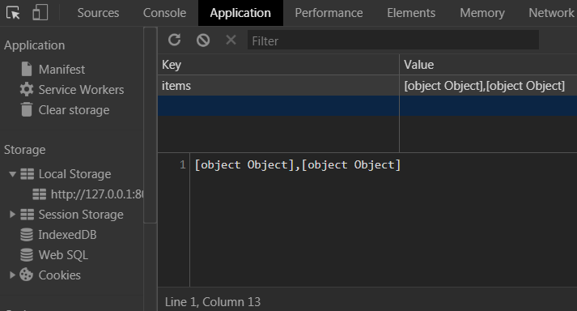
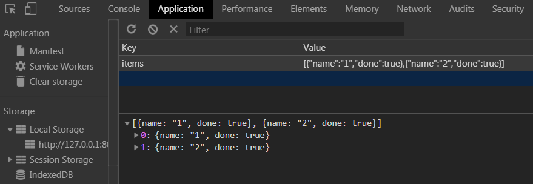

終於接觸到了LocalStorage
Window.localStorage
我們可以將資料儲存在瀏覽器中，而且資料不會因為關閉瀏覽器而消失！
新增
1
localStorage.setItem(`myCat`, `Tom`);
取得
1
let cat = localStorage.getItem(`myCat`);
移除
1
localStorage.removeItem(`myCat`);
清除所有
1
localStorage.clear();
回到題目：
- 當我們載入畫面時，網頁會到localStorage撈取資料，並將資料渲染在畫面上。
- 按下送出後我們會將input的值存入一個變數中，再把這個值存入localStorage，同時渲染在畫面上。
- 按下checkbox改變資料內容，也要同時存入localStorage。
建立變數和事件
先建立目前可能會使用到的變數
1 | const submitBtn = document.querySelector('input[type="submit"]');//送出 |
送出/儲存資料
原本的submit預設功能我們透過e.preventDefault()將它關掉。
接著為了預防送出空資料，我們做一個簡單的判斷inputArea.value
建立一個變數myitem儲存我們的資料
再將這筆資料存入一開始建立的items陣列中
接著也就是這次的重點
透過localStorage.setItem()將資料存入localStorage
items是自訂的名稱，也就是localStorage資料庫中的key，之後透過這個名稱去選到這筆資料。後面參數是我們要存入的資料。
1 | function submit(e){ |
注意：我們必須透過JSON.stringify()將資料轉換為字串再存入localStorage
沒有轉為字串的話：

又再一次看到這兩個功能了
JSON.stringify()：將資料轉為 JSON 格式的字串。JSON.parse(myJSON)：將資料由 JSON 格式字串轉回原本的資料內容及型別。
正確顯示：

渲染到畫面上
資料確認存入localStorage無誤後，我們就要讓資料渲染到畫面上
注意:此時我們的item還是空陣列，我們先做一筆假資料測試，下一步會將localStorage資料同步到item中
1 | const items = [{ |
我們透過map將每一筆資料轉換成字串放入innerHTML中，而我們在Day6也有做過類似的事情，最後要加入.join('')將陣列轉出來的逗號刪除。
最後自己呼叫show()一次，因為網頁一載入就需要渲染第一次。
將資料同步到變數中
我們的變數items = []必須存取localStorage的資料（如果有資料的話）
所以我們可以這麼做，這邊使用到的是.getItem()1
2
3
4
5
6let items = [];
function load(){
if(!localStorage.getItem('items')) return //如果localstorage沒有值就return
items = [...JSON.parse(localStorage.getItem('items'))]
}
load()
因為我們取得的是JSON格式的字串，所以必須透過JSON.parse()將字串轉回原本的資料內容及型別。
畫面一載入我們就去撈資料，並且將資料透過展開運算子(Spread Operator)塞入items
展開運算子(Spread Operator)真的很酷，我們在Day14使用過
精簡版：直接定義items為去取得資料或空陣列1
const items = JSON.parse(localStorage.getItem('items')) || [];
Checkbox改變資料
我們的checkbox是動態產生的DOM結構，所以無法在一開始就透過定義變數去取得
寫法一：將事件觸發設定在父層.plates
寫法二：將事件觸發寫在show()函式內。此時已可選到input，但程式碼比較醜。
寫法一：1
2
3
4
5
6
7
8
9
10
11const display = document.querySelector('.plates')
function checkHandler(e){
if (!e.target.matches('input')) return;
let target = e.target
let targetIndex = target.dataset.index
items[targetIndex].done = !items[targetIndex].done
localStorage.setItem('items',JSON.stringify(items))//存入localStorage
}
display.addEventListener('click',checkHandler)
關鍵:因為觸發在.plates所以e.target不一定是input，不是點到input就做阻擋
寫法二：1
2
3
4
5
6
7
8
9function show(){
//..
//...
const checkboxes = document.querySelectorAll('input[type="checkbox"]')
checkboxes.forEach((checkbox)=>{
checlbox.addEventListener('click',checkHandler)
})
}
show()
程式碼
1 | const submitBtn = document.querySelector('input[type="submit"]'); |